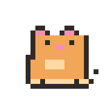
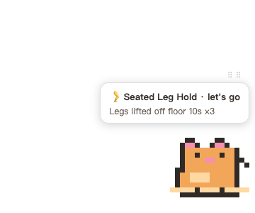
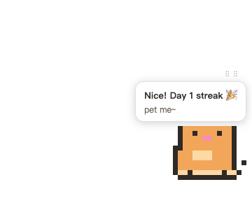

A pixel cat demonstrates seated micro-exercises — pet it to check in, grow your streak locally.
It accompanies you; it never interrupts you.



brew install --cask liyuankui/tap/micro-petUnsigned app: right-click → Open on first launch. Manual download from Releases also works.
Please install and configure the micro-pet desk pet for me following these two documents:
1. Install: https://raw.githubusercontent.com/liyuankui/workoutpet/master/docs/agent-install-prompt.en.md
2. Then customize my reminder schedule: https://raw.githubusercontent.com/liyuankui/workoutpet/master/docs/agent-setup-prompt.en.mdPaste to any AI assistant (ZCode / Claude / WorkBuddy) — it fetches the docs, installs, verifies, then interviews you (routine / slump / goals / dose) to generate your personal schedule.
Non-modal reminders: the cat exercises by itself in the corner. Ignore it for 2 minutes and it quietly goes back. Zero popups, zero notifications.
Lower body / shoulders-neck / wrists / core rotate automatically, least-recently-trained first — not random, a balanced coach.
Denser around lunch and the afternoon slump; silent after work and at night. Midday workouts? That window goes silent.
No settings panel: chat with your AI about your routine; it generates the config, validates, applies.
Streak lives in ~/.micro-pet/streak.json. No accounts, no cloud. App telemetry is anonymous and one-click opt-out (this page's stats aside).
UI / exercise library / weekly report in Chinese and English — follows your system or one-click switch.
30–60 second seated movements slipped into work gaps. Research: 5 minutes of light walking every 30 minutes cuts post-meal glucose spikes by 58%; a median 4.4 min/day of incidental activity is associated with 26–30% lower all-cause mortality. Full guide →